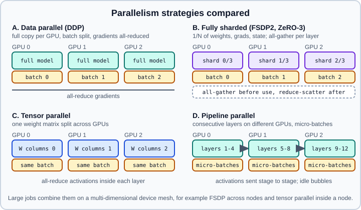

Distributed Training Concepts
|
This content was generated with the assistance of AI and should be verified against the official documentation before being relied on in production. |
One accelerator is often too small or too slow. A model may not fit in its memory, a data set may take weeks to pass through it, or both. Distributed training splits the work over several devices (on one machine or many). This page explains the strategies, what each one communicates, and the practical rules that make runs correct, then shows PyTorch 2.15 code for the common cases and summarises the TensorFlow, Keras and JAX equivalents.
Targeted versions: Python 3.13, PyTorch 2.15, TensorFlow 2.21 with Keras 3.15, checked on 2026-10-30. Examples were run on Python 3.13 with PyTorch 2.15 (CPU), Keras 3.15 on TensorFlow 2.21 (one replica) and Keras 3.15 on JAX on 2026-11-01. The PyTorch scripts are written for several CUDA GPUs with the nccl backend; they were run only as CPU smoke tests with the gloo backend (CUDA calls removed, two processes, eight for the device mesh), not on GPUs. Start with Hardware, Memory & Mixed Precision, whose memory accounting explains why sharding matters.
Vocabulary
-
World size: the total number of processes (usually one per GPU). Rank: the global index of a process, from 0 to world size minus 1. Local rank: the index within one machine, used to pick the GPU.
-
Process group: a set of ranks that communicate together, backed by a communication library: NCCL (NVIDIA GPUs, and RCCL on AMD), Gloo (CPU and fallback), or MPI.
-
Collectives: operations involving all ranks. Broadcast copies a tensor from one rank to all. All-reduce sums (or averages) tensors across ranks and leaves the result on every rank. All-gather collects each rank’s shard onto every rank. Reduce-scatter sums tensors across ranks and leaves each rank with one shard of the result.
-
Global batch size: the number of examples contributing to one optimiser step, equal to the per-device batch times the world size times the accumulation steps.
Choosing a strategy

| Strategy | What is split | Communication | Use when |
|---|---|---|---|
Data parallel (DDP) |
The batch. Every device holds the full model. |
One all-reduce of gradients per step, overlapped with the backward pass. |
The model and its optimiser state fit on one device and you want throughput. Start here. |
Sharded data parallel (FSDP2, ZeRO) |
The batch, and also parameters, gradients and optimiser state. |
All-gather of each layer’s weights before use, reduce-scatter of its gradients after. |
The model state does not fit on one device, or you want larger batches. |
Tensor parallel |
Individual weight matrices (for example columns of one layer) across devices. |
All-reduce or all-gather of activations inside every layer, so it needs fast links. |
Single layers are huge; keep inside one node with high-bandwidth interconnect. |
Pipeline parallel |
Consecutive groups of layers (stages) on different devices. |
Point-to-point sends of activations between stages. |
Very deep models across nodes with slower links; micro-batching hides idle time. |
Large language model training combines them: for example FSDP across nodes, tensor parallelism inside a node, and pipeline parallelism between groups of nodes. The decision order that usually works:
Data parallelism and all-reduce
Each worker holds an identical copy of the model, processes a different slice of the batch, and computes local gradients. Averaging the gradients over workers gives exactly the gradient of the combined batch, so all copies take the same step and stay identical. The averaging is an all-reduce.
A ring all-reduce splits the tensor of \(S\) bytes into \(N\) chunks and passes them around a ring in two phases (reduce-scatter, then all-gather). Each worker sends and receives
\[ 2\,\frac{N-1}{N}\,S \]
bytes, which is nearly independent of \(N\). That is why data parallelism scales well on fast links: the cost per step depends on the model size, not on the number of workers. The cost is not free, though. If the model is large and the network slow, communication can dominate, and the step time is bounded below by \(2S/B\) for link bandwidth \(B\). DDP hides much of this by starting the all-reduce of the gradients of late layers while earlier layers are still computing their backward pass (bucketed, overlapped communication).
DistributedDataParallel in PyTorch
torch.nn.parallel.DistributedDataParallel (DDP) is the standard data-parallel wrapper. It is launched with one process per GPU through torchrun, which sets the environment variables RANK, LOCAL_RANK and WORLD_SIZE and handles restarts (elastic training). The older torch.nn.DataParallel runs one process with threads, is slower and is not recommended.
# train_ddp.py - launch with: torchrun --standalone --nproc_per_node=4 train_ddp.py
import os
import torch
import torch.distributed as dist
from torch import nn
from torch.nn.parallel import DistributedDataParallel as DDP
from torch.utils.data import DataLoader, DistributedSampler, TensorDataset
def main():
local_rank = int(os.environ["LOCAL_RANK"])
torch.cuda.set_device(local_rank)
dist.init_process_group(backend="nccl")
rank, world = dist.get_rank(), dist.get_world_size()
# Same seed everywhere so every rank builds identical initial weights.
torch.manual_seed(0)
model = nn.Sequential(nn.Linear(32, 128), nn.ReLU(), nn.Linear(128, 4)).cuda()
model = DDP(model, device_ids=[local_rank])
data = TensorDataset(torch.randn(4096, 32), torch.randint(0, 4, (4096,)))
sampler = DistributedSampler(data, num_replicas=world, rank=rank, shuffle=True)
loader = DataLoader(data, batch_size=64, sampler=sampler, num_workers=2, pin_memory=True)
optimizer = torch.optim.AdamW(model.parameters(), lr=1e-3)
loss_fn = nn.CrossEntropyLoss()
for epoch in range(3):
sampler.set_epoch(epoch) # different shuffle each epoch
for x, y in loader:
x, y = x.cuda(non_blocking=True), y.cuda(non_blocking=True)
optimizer.zero_grad(set_to_none=True)
loss = loss_fn(model(x), y)
loss.backward() # gradients are all-reduced here
optimizer.step()
if rank == 0:
print(f"epoch {epoch} loss {loss.item():.4f}")
if rank == 0:
# Save the underlying module's weights, not the DDP wrapper.
torch.save(model.module.state_dict(), "model.pt")
dist.barrier()
dist.destroy_process_group()
if __name__ == "__main__":
main()Rules that avoid the common failures:
-
Use
DistributedSamplerand callset_epoch. Without it every rank sees the same data. Withoutset_epochevery epoch has the same order. -
Construct the model identically on every rank. DDP broadcasts the initial parameters from rank 0 when it is built, but different random states in data augmentation are usually wanted per rank.
-
Log, save and evaluate carefully. Print and write checkpoints from rank 0 only, but do not put a collective (including DDP forward) inside an
if rank == 0branch that other ranks skip, or the job hangs. -
Every rank must call the same collectives in the same order. A rank with a different number of batches (uneven data) stalls the others. Drop the last incomplete batch, or use the
Joincontext manager. -
Unused parameters. If some parameters get no gradient in a step, DDP raises an error unless
find_unused_parameters=True, which costs time. Prefer fixing the model. -
Synchronise batch statistics if per-GPU batches are small. Convert with
nn.SyncBatchNorm.convert_sync_batchnorm(model)before wrapping in DDP. -
Load checkpoints with
weights_only=True, which is the default since PyTorch 2.6. Old code that saved the whole pickled model withtorch.save(model)fails to load under the default; savestate_dict()instead.
Accumulation with DDP
With accumulation, the all-reduce is only needed on the last micro-batch. The no_sync() context manager suppresses it:
accum_steps = 4
for i, (x, y) in enumerate(loader):
x, y = x.cuda(), y.cuda()
is_last = (i + 1) % accum_steps == 0
# Skip gradient synchronisation except on the micro-batch that steps the optimiser.
ctx = model.no_sync() if not is_last else torch.enable_grad()
with ctx:
loss = loss_fn(model(x), y) / accum_steps
loss.backward()
if is_last:
optimizer.step()
optimizer.zero_grad(set_to_none=True)Sharded training: ZeRO and FSDP2
Data parallelism wastes memory: every worker stores the same parameters, gradients and optimiser state. The ZeRO family of ideas (Rajbhandari et al., 2020) removes the redundancy in three stages: shard the optimiser state (stage 1), additionally the gradients (stage 2), additionally the parameters (stage 3). With stage 3 and \(N\) workers the 16 bytes per parameter from the previous page become \(16/N\) bytes per worker, plus temporary full copies of the layer currently being computed.
PyTorch’s implementation is FSDP2, called through torch.distributed.fsdp.fully_shard. It is the recommended FSDP; the older FullyShardedDataParallel wrapper class is the previous design. fully_shard converts parameters into DTensor objects sharded along the first dimension. For each wrapped module, the forward pass all-gathers its weights, computes, and frees the full copy; the backward pass all-gathers again, computes gradients, and reduce-scatters them. Wrap each repeated block (for example every transformer layer) and then the whole model, so only one block’s full weights are alive at a time.
# train_fsdp2.py - torchrun --standalone --nproc_per_node=4 train_fsdp2.py
import os
import torch
import torch.distributed as dist
from torch import nn
from torch.distributed.device_mesh import init_device_mesh
from torch.distributed.fsdp import MixedPrecisionPolicy, fully_shard
class Block(nn.Module):
def __init__(self, d):
super().__init__()
self.ff = nn.Sequential(nn.Linear(d, 4 * d), nn.GELU(), nn.Linear(4 * d, d))
def forward(self, x):
return x + self.ff(x)
def main():
local_rank = int(os.environ["LOCAL_RANK"])
torch.cuda.set_device(local_rank)
mesh = init_device_mesh("cuda", (int(os.environ["WORLD_SIZE"]),))
model = nn.Sequential(*[Block(1024) for _ in range(12)]).cuda()
# Compute in bfloat16, keep the sharded master parameters in float32.
mp = MixedPrecisionPolicy(param_dtype=torch.bfloat16, reduce_dtype=torch.float32)
for block in model:
fully_shard(block, mesh=mesh, mp_policy=mp)
fully_shard(model, mesh=mesh, mp_policy=mp)
# Create the optimiser AFTER sharding so it sees the sharded DTensor parameters.
optimizer = torch.optim.AdamW(model.parameters(), lr=1e-3)
for step in range(10):
x = torch.randn(16, 1024, device="cuda")
loss = model(x).float().pow(2).mean()
loss.backward()
optimizer.step()
optimizer.zero_grad(set_to_none=True)
if dist.get_rank() == 0:
print(step, loss.item())
dist.destroy_process_group()
if __name__ == "__main__":
main()Points to know:
-
In PyTorch 2.15 the default of
reduce_dtype=Nonefollows each parameter’s gradient dtype. To keep the earlier behaviour setreduce_dtype=torch.bfloat16explicitly; the example setstorch.float32to make the choice visible. -
Saving a sharded model by gathering everything on rank 0 can run out of memory. Use Distributed Checkpoint (
torch.distributed.checkpoint, withget_state_dictandset_state_dictfromtorch.distributed.checkpoint.state_dict), which writes each rank’s shard in parallel and can reload on a different world size. Checkpoint files written by 2.15 cannot be read by 2.14. -
The
ncclbackend in 2.15 is the rewritten implementation; setting the backend tonccl-legacyrolls back if you hit a regression. -
Sharding adds communication: all-gather plus reduce-scatter moves roughly 1.5 times the traffic of a plain all-reduce per step. It pays off when memory is the constraint. Overlapping with computation (prefetching the next block’s weights) reduces the cost.
-
DeepSpeed ZeRO and Hugging Face Accelerate expose the same ideas with their own configuration; the concepts transfer.
Tensor and pipeline parallelism
Tensor parallelism splits a layer’s computation. For a feed-forward block \(Y = \mathrm{GELU}(XA)B\), split \(A\) by columns and \(B\) by rows; each device computes its slice independently and one all-reduce at the end of the block sums the partial outputs. Attention heads split naturally across devices. The all-reduce happens in the forward and backward pass of every layer, so tensor parallelism needs very fast links (NVLink inside a node) and is rarely used across nodes. PyTorch expresses it through DTensor and torch.distributed.tensor.parallel with plans such as column-wise and row-wise parallel styles.
Pipeline parallelism places consecutive layers on successive devices. Running one batch through would leave all but one device idle, so the batch is cut into micro-batches streamed through the stages. The fraction of time lost to the start-up and drain phases (the bubble) is about \((p-1)/(m+p-1)\) for \(p\) stages and \(m\) micro-batches, so you want many micro-batches per stage. PyTorch provides torch.distributed.pipelining, with schedules such as GPipe-style fill-drain and 1F1B (one forward, one backward) that bound activation memory.
Device mesh. init_device_mesh builds an N-dimensional grid of ranks with named dimensions, for example ("dp", "tp"). Each strategy runs along its own dimension, so a 2-D mesh of 4 nodes by 8 GPUs can shard over nodes with FSDP2 and split tensors inside each node. This composition is how very large models are trained.
from torch.distributed.device_mesh import init_device_mesh
# 2 data-parallel groups x 4 tensor-parallel ranks = 8 GPUs (launch with 8 processes)
mesh = init_device_mesh("cuda", (2, 4), mesh_dim_names=("dp", "tp"))
dp_mesh, tp_mesh = mesh["dp"], mesh["tp"]
print(dp_mesh.size(), tp_mesh.size()) # 2 4Source: PyTorch, torch.distributed
Batch size, learning rate and correctness
Scaling out multiplies the global batch size, which changes training dynamics.
-
Linear scaling rule. When the global batch grows by a factor \(k\), multiply the learning rate by \(k\), with a warm-up of a few epochs (Goyal et al., 2017). It holds for SGD up to a point; for AdamW and very large batches the square-root rule or tuning is more common. There is a critical batch size beyond which a bigger batch no longer speeds convergence per example.
-
Reproducibility. Results depend on the world size because the sum order, batch composition and normalisation statistics change. Set seeds per rank deliberately.
-
Evaluate on the same data in every rank. Metrics must be averaged with an all-reduce (or gathered), otherwise each rank reports a different number.
-
Hangs are the typical failure. Mismatched collectives, a crashed rank, or a firewall blocking the rendezvous port freeze the job silently. Set a timeout in
init_process_group, keep NCCL asynchronous error handling enabled (see the torch.distributed documentation for the environment variable), and use the Flight Recorder intorch.distributedfor post-mortems. -
Fault tolerance.
torchruncan restart failed workers from the last checkpoint; checkpoint often enough that a restart loses little.
TensorFlow and Keras
TensorFlow’s tf.distribute.Strategy API wraps the same ideas behind a context manager:
-
MirroredStrategy: synchronous data parallelism on the GPUs of one machine, with all-reduce. -
MultiWorkerMirroredStrategy: the same across machines; configured through theTF_CONFIGenvironment variable. -
TPUStrategy: data parallelism over TPU cores, created with aTPUClusterResolver. -
ParameterServerStrategy: asynchronous training with parameter servers, a niche choice today.
import tensorflow as tf
import keras
strategy = tf.distribute.MirroredStrategy() # all visible GPUs of this machine
print("replicas:", strategy.num_replicas_in_sync)
# Scale the global batch size with the number of replicas.
per_replica_batch = 64
global_batch = per_replica_batch * strategy.num_replicas_in_sync
with strategy.scope(): # variables are created mirrored
model = keras.Sequential(
[keras.layers.Input(shape=(32,)), keras.layers.Dense(128, activation="relu"), keras.layers.Dense(4)]
)
model.compile(
optimizer=keras.optimizers.Adam(1e-3 * strategy.num_replicas_in_sync),
loss=keras.losses.SparseCategoricalCrossentropy(from_logits=True),
)
x = tf.random.normal((4096, 32))
y = tf.random.uniform((4096,), maxval=4, dtype=tf.int32)
ds = tf.data.Dataset.from_tensor_slices((x, y)).shuffle(4096).batch(global_batch).prefetch(tf.data.AUTOTUNE)
model.fit(ds, epochs=2)Keep in mind that tf.distribute guide pages still contain a column for Estimators, which belong to the removed TensorFlow 1 generation; use Keras fit or a custom loop with strategy.run.
Keras 3 also has its own keras.distribution API, described by Keras as JAX-backend only: DataParallel and ModelParallel with a DeviceMesh and a LayoutMap that says how each variable is laid out.
import os
os.environ["KERAS_BACKEND"] = "jax" # must be set before importing keras
import keras
devices = keras.distribution.list_devices()
keras.distribution.set_distribution(keras.distribution.DataParallel(devices=devices))JAX expresses all of this with sharding: arrays carry a NamedSharding over a Mesh of devices with named axes, and jit compiles a program that inserts the necessary collectives automatically (the SPMD model). The mesh-with-named-axes idea is the same as PyTorch’s DeviceMesh and DTensor. See the JAX distributed-arrays documentation in the references.
Common pitfalls
-
Scaling the batch but not the learning rate (or the reverse), then blaming the framework for slower convergence.
-
Data loading as the bottleneck. More GPUs consume data faster; increase
num_workers, usepersistent_workers=Trueandpin_memory=True, and check GPU utilisation before adding devices. -
Forgetting
DistributedSampler.set_epoch. -
Rank-dependent control flow around collectives (hangs).
-
Saving the DDP wrapper instead of
model.module, producingmodule.-prefixed keys that fail to load into a plain model. -
Using
DataParallelbecause an old tutorial did. -
Over-sharding small models. FSDP2 communication can make a model that fits on one GPU slower than DDP.
-
Single-node tests only. Behaviour across nodes depends on the network; benchmark inter-node bandwidth with the NCCL tests before large jobs.